ABSTRACT
This paper reports on the reconstruction process of Shape Grammar Interpreter (SGI) (Krishnamurti 1982a) and its values as the first interpreter of shape grammar. This research has two points on SGI reconstruction: archiving and reconstruction. It was the beginning of the reconstruction to gather the information about the SGI that was distributed and transmitted in a limited society.
In the process of archiving, I have been able to excavate SGI documents, such as technical reports(Krishnamurti 1982a)(Krishnamurti 1982b) and codes of SGI(Krishnamurti 1980a), that have not been discovered in the past. Although there was a lack of visual data, such as picture describing the screen or use of SGI, regarding the interface, I can re-imaging SGIs that are limited but close to their original appearance through interviews with authors and other supplementary materials.
In addition to archiving for SGI, the principles of SGI have been implemented in a new computing environment. This reconstruction provides the opportunity not only to reflectively understand the goal of shape grammar interpreter based on the past computing environment, but also to draw the potential of the future of shape grammar.
1 Shape Grammar Interpreter
1.1 Interpreter and SGI
Shape Grammar Interpreter (SGI, pronounced sigi) is and interactive computer program for the manipulation and construction of shapes using the shape grammar formalism(Stiny 1980) using computer for general or specific purposes. SGI is the first general interpreter for shape grammar, allowing the user to define rules and apply them to generate 2D shapes. The design of the computer program SGI for the generative specification of shapes using the shape grammar formalism is outlined. The program interprets commands from the SGI language. The commands which are described in detail allow for shape grammars to be defined interactively, and for shapes defined by these shape grammars to be generated via user-specified sequences of shape rule application. The program has graphics capability which permits line drawings of shapes to displayed on the screen and drawn on the graphics plotter(Krishnamurti 1982a, 2).
1.2 Historical Values
SGI is one of the early shape grammar implementations(Gips 1999) and the first generalised implementation of a shape grammar system, allowing the user to define rules and apply them to generate 2D shapes(Eloy, Pauwels, and Economou 2018, 133). Figure 1 shows the research trend of shape grammar. This figure was created from 221 precedents of shape grammar researches. The size of the circle shows how many studies are executed at that time. The larger the circle, the more studies were conducted.
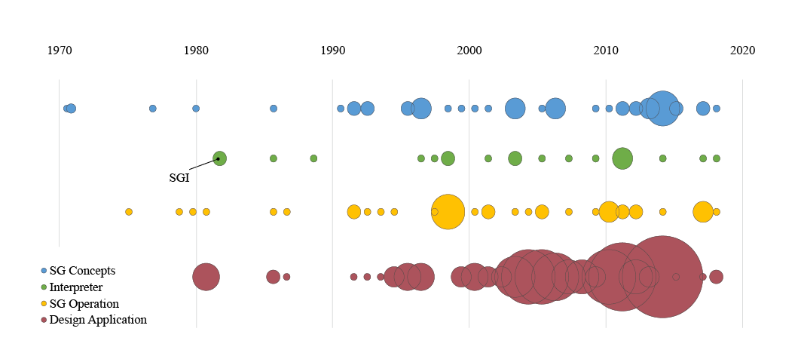
Figure 1: Research Trend Diagram of Shape Grammar
The research trend diagram has four categories about the type of shape grammar researches: Shape Grammar (SG) Concepts, Interpreter, SG Operation, Design Application. Shape Grammar Concepts includes studies and researches about the principle and notion of shape grammar in design, art, mathematics, etc. Interpreter includes precedents that created general or specific interpreter of shape grammar in various fields. SG Operation includes the studies about operations of shape grammars such as algebra of lines(Krishnamurti 1980b). Design Applications includes the cases of implementing shape grammar into design process.
The first blue circle in the row of SG Concepts is George Stiny and James Gips’ paper about the shape grammar formalism in 1971(M. Verkerk 2014, 6). It can be seen that the research about shape grammar concepts is ongoing with some level of fluctuation.
The first green circle in the row of Interpreter is Ramesh Krishnamurti’s SGI. The number and size of green circles shows that interpreter research is relatively small compared to other studies. Most of them are concentrated in the period between 2002 and 2015, and the research filed is shrinking from 2016.
In addition to SG Concepts, the research area of SG Operations is consistently being studied. The increase in research volume seems to be related to the increase in research volume by SG Concepts. The diagram shows an increase in SG Operation research a few 3-5 years after the study was active on SG Concepts. It can be assumed that after the various SG Concepts have been created, operations on them are studied.
This diagram shows independent and unusual aspects of Design Application in shape grammar. Although it started later than other studies, the research volume is very large, and the density is high from the late 1990s to the mid-2010s. Especially, since 2000s researches into applying shape grammar to design problems has been actively conducted.
In this research trend, the historical value of SGI can be re-confirmed: SGI is the first case of about 15 general interpreters when the concept of shape grammar was created by George Stiny and has both uniqueness and pioneer-ship in the research of shape grammar interpreter.
2 Reconstructing SGI
2.1 Materials for Reconstruction of SGI
The first challenge of reconstruction was to imagine the use and interface of SGI. There are many figures showing the operation or application of shape grammar through SGI, but there is limited information about how the SGI is implemented and what it looks like.
I received two types of technical reports from the author, Ramesh Krishnamurti: ‘An Interpreter for Shape Grammar’ and ‘User Manual’. Those reports were written two years after the author finished to implement the code of SGI. ‘An Interpreter for Shape Grammar’ contains general explains and technical commentaries of SGI. ‘User Manual’ contains the simplified and exact information how users operate this software. Detailed descriptions and examples of shortcuts allow me to infer the interface or the order of operation that is not included in the general description.
The original SGI programming codes excavated with the author was one of the most important sources for reconstruction. The codes were written in Fortran, printed onto green bar continuous form papers. The codes include not only how rules are established and how to find sub-shapes, but also printer drivers that can plot the results of shapes that were not visible on the monitor or screen at the time. This material was employed to investigate how the mathematical concepts and languages of SGI in technical reports are translated and converted into computer languages.
The lack of data on the user interface was overcome by the VAX11 Hardware Handbook(Digital Equipment Corporation. 1982). Since there is a lack of materials that show the actual SGI execution as shown in the picture, I investigated the computer model used by the author, found the manual of the computer, and inferred the computing environment and user interface of the time.
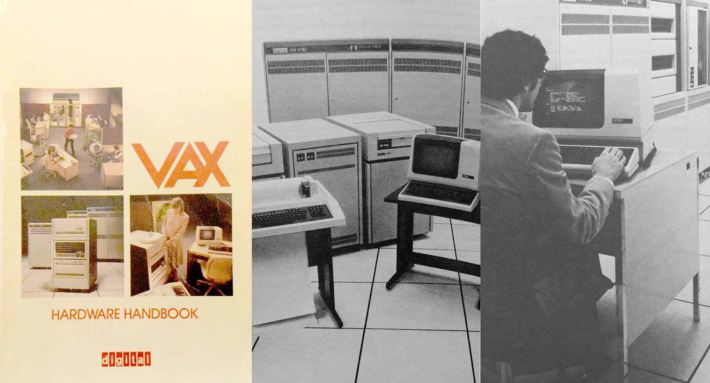
Figure 2: Vax Hardware Handbook (left), VAX 11/780 with Tektronix 4027 terminal and Interface (middle and right)
Interview is one of the key materials to reconstruct the original SGI. At the initial stage of reconstruction, it was hard to notice the gap between current and almost 40 years ago technology. What nowadays computer users take for granted in these days’ computer and computing environment did not exist at that time, or remained only theoretically possible. In terms of interface of SGI, interview with the author can fill inadequate information not found in the literatures, because there are no photographs or descriptions about interface itself. At that time, mouse did not exist, only keyboard is a main device to input data to computer, and plotting is required to display result shapes. Moreover, the central processor unit has low clock, such as 1hz, efficient strategy for data structures and calculations are required.
Realizing these gaps between current and past technology through interview has supported me to investigate, analyze, translate, and understand the literatures from the perspective of users or authors at that time as possible.
In addition to interviews, several papers and thesis are reviewed to develop a sense of shape grammar and investigate the flow and trends of research in this field.
2.2 Analysis of Original SGI Interface
SGI run on VAX 11/780. Back in the days of SGI, the computing environment was not a single integrated system within micro processing unit, input unit, and output screen unit as it is today, but a system with three separate devices connected: huge processing units, a terminal, and a plotter: Users can input data through Tektronix 4027 colour display terminal, and output shape information through Tektronix 4663 graphics plotter. The Figure 2 shows pictures of VAX 11/780, Tektronix 4027 terminal, and Tektronix 4663 plotter.
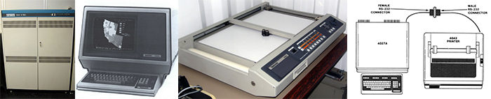
Figure 3: VAX 11/780 (first), Tektronix 4027 terminal (second), Tektronix 4663 plotter (third), and Operation of Tektronix 4027 terminal (fourth)
SGI had one command line with plotter driver. It does not have any graphical interaction with users for real-time shape calculation. Users needed to calculate their geometry coordinates by hand. After calculating, they can input their shape information to SGI. Terminal was connected to printer or plotter. SGI’s plotter driver can make it possible to directly print out generated shape with labels and notations.
User window is the only graphical interaction part of SGI. The user window supports the coordinate system in which the shapes and shape rules are constructed. This window can be redefined at any stage in the program(Krishnamurti 1982b), and was inherited from the graphic system of Tektronix 4027.
The figure 4(Digital Equipment Corporation. 1982) on the left shows an example of usage of vector system in Tektronix. The vector starts at (120,120) and draw a line to (91,30); from there draw line to (168,85), and so on through points (72, 85), (149, 30), and (120,120).
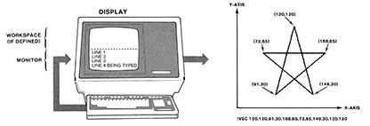
Figure 4: Terminal Interface (left) and Vector System (right) in Tektronix
2.3 Reconstructed SGI
The first imagination of the whole structure and interface of SGI started from the statements in the SGI User Manual.
SGI is an interactive computer package with graphics facilities. The package:
(1) accepts any shape grammar definition (in the standard form) and any subsequent on-line modifications;
(2) applies any user specified sequence of shape rule applications and has backtrack capability
(3) provides graphics, hard copy (plotter drawings) and line printer descriptions of any partial or complete shapes (designs) generated at any stage of shape rule application;
(4) stores any shapes and shape grammars defined at an interactive session and retrieves any shape or shape grammar so stored at any later session.
SGI is implemented in Fortran on the VAX11/780 for the Tektronix 4027 colour graphics display terminal and the Tektronix 4663 graphics plotter.
Based on this information, I established newly translated structure of SGI in Python. For the prototype of the reconstruction, I used Python 3.6.5 and PyGame 2.0.0 library.
The reconstructed SGI has two main phases like the original SGI: Shape Construction Phase and Shape Generation Phase (See Figure 5). After users have created and saved a rule in the Shape Construction Phase, the user can create a new shape by finding the desired sub-shape and applying the saved rule in the Shape Generation Phase. Users can create and apply rules at any time by switching between two phases.
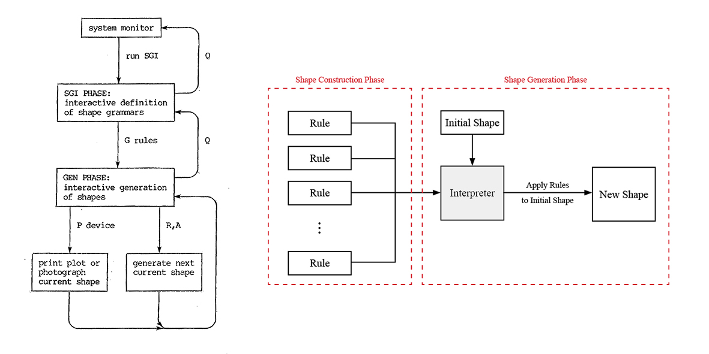
Figure 5: The Software Structure of the Original SGI (left) and the reconstructed SGI (right)
Two Cartesian coordinates spaces constitutes Shape Construction Phase. The left coordinates space named ‘A’ contains the condition shape of a rule. Otherwise, the right coordinates space named ‘B’ contains the result shape of the rule.
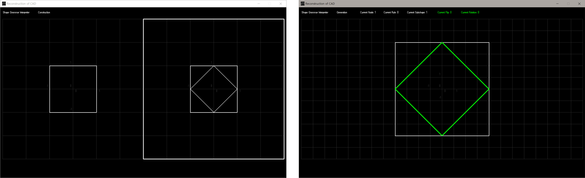
Figure 6: The Screen of Shape Construction Phase in the reconstructed SGI (left) and The Screen of Shape Construction Phase in the reconstructed SGI (right)
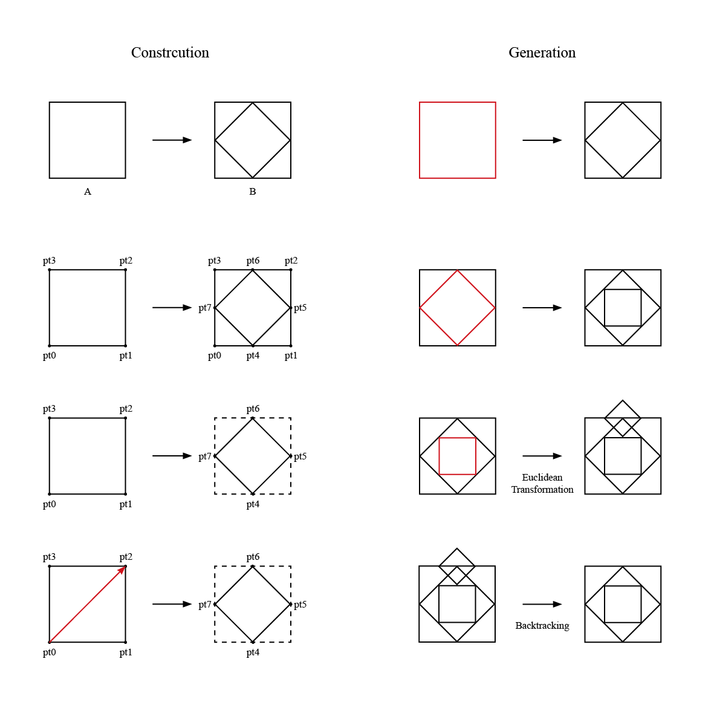
Figure 7: Working Process Analysis of the reconstructed Shape Grammar Interpreter
Working process of the reconstructed SGI is almost same as the original SGI (See Figure 8). In construction mode, user can set the initial condition geometry in the screen A, and users can select screen B by copying the shape information from A. Then users can set the new shapes as the result geometry of a rule. Interpreter holds information of points of left and right shapes while users draw shapes. After finishing to set rule geometries, interpreter will calculate the shape difference by subtracting the vertices from screen B to A and stores transformation matrix to be used for selecting sub-shapes. For example, in the Figure 6, shape in screen A has 4 points (pt0, pt1, pt2, pt3) and shape in screen B has 8 points (pt0, pt1, pt2, pt3, pt4, pt5, pt6, pt7). Difference of these two shapes is 4 points (pt4, pt5, pt6, pt7). The interpreters only stores information of shape difference and transformation matrix as a form of a rule.
In generation mode, users can apply rules that were previously set from construction mode. In this mode, users can select a rule to be applied, sub-shapes where rule will be applied, and Euclidian transformation such as flipping, rotating, and scaling.
2.4 Actual Use of the Reconstructed SGI
This section will show a demo of the reconstructed SGI step by step and function by function.
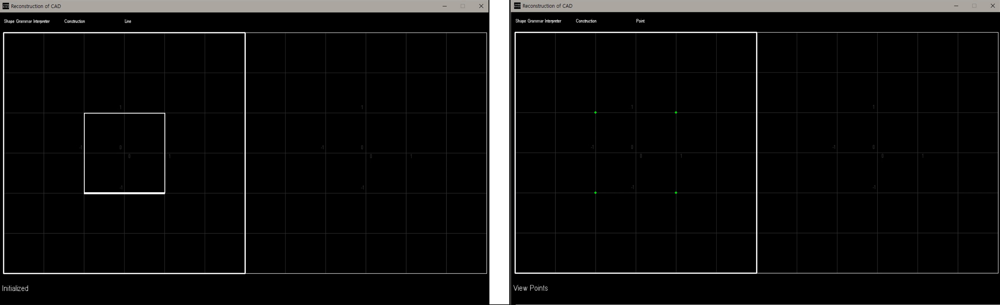
Figure 8: Initialized Shape View Line mode (left) and View Point mode (right)
After running SGI.exe file, users face construction mode screen. The default settings of the visualization mode is ‘View Line’ mode to show lines of shapes. [VL] sets the mode switch to viewing lines. Otherwise, users can see vertices of shapes through ‘View Point’ mode. [VP] sets the mode switch to viewing points(Krishnamurti 1982b, 53).
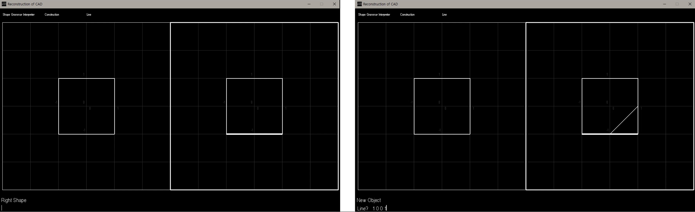
Figure 9: Active Shape (left) and New Lines (right)
After drawing initial condition shape of a rule by typing coordinate of vertices of the shape, users can edit, activate and display the specified shape by changing two screens A and B. [AL] activates left side shape, [AR] activates right side shape(Krishnamurti 1982b, 14). Users can add a new line by inputting two coordinates of the line. In line mode, SGI reads in a line between the "from" point to the "to point", and unions it to the active shape. After typing [N] command, users will be asked to input four coordinates of start and end points. This command is repetitive in that SGI will keep prompting the user for new lines until it receives a blank input or a
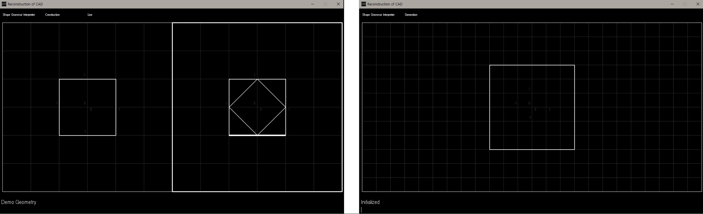
Figure 10: Generate (left) and Initialize (right)
When users input [G] command, SGI will store a rule from screen A and screen B. It will store difference of screen A and screen B shapes and transformation matrix from screen A. Rule will be saved into "Rule Set" and users can apply different rules in Generation mode. In original SGI, when users heat [G] command, it not only generates a rule from constructed geometries, but also switches onto the shape Generation mode(Krishnamurti 1982b, 22).
When users input [I] command in Generation mode, SGI will (re-)initialize itself to its default initial state and clear the display screen(Krishnamurti 1982b, 27). In reconstructed SGI, since some basic geometries are stored, users can recall by inputting [I] command with index number. For example, [I1] command will recall a square which length of a side is 8 in the grid of Generation mode.
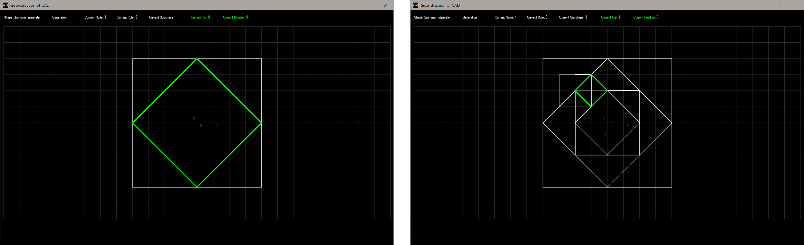
Figure 11: Apply the Shape Rule (left) and Transformation (Right)
When users input [A] command in Generation mode, a rule will be applied to given shapes. In original SGI, interpreter distinguish [A] command and [R] command. The main difference of [A] command and [R] command is sub-shape that rule will be applied. [A] command applies a rule to the first sub-shape, [R] command applies the rule to the selected sub-shape. In the reconstruction, as the default sub-shape is always the first sub-shape and users can have options which sub-shape they want to apply a rule by typing [F2] key, [A] and [R] commands were merged into solely [A] command. Users can keep apply a rule from rule set if shapes have enough sub-shape to be used for generation with Euclidian transformation.
3 Comparison
3.1 Comparative Analysis of SGI 1980 and 2019
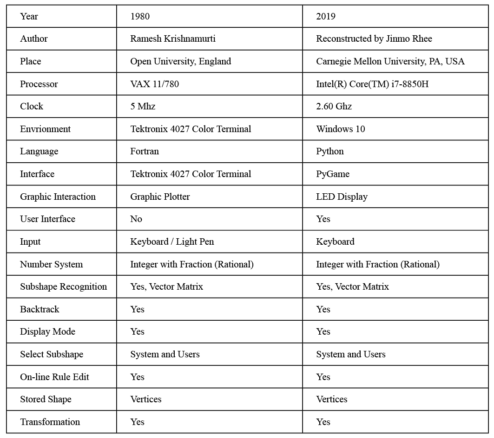
Figure 12: Generate (left) and Initialize (right)
There are three main points to focus on in this comparative analysis: the computing environment, interfaces, and functionality.
There is a huge difference in computing environments between 1980 and 2019. The author used a big and slow computer without mouse input. However, nowadays, I can access smaller computers and complex input systems with 520 times faster processing units and mouse input.
This difference in computing environment has led to differences in interfaces. The original SGI runs directly through the terminal, and the output can only be seen by plotting, resulting in a fairly weak interaction. There is also limited interaction with typing the vertices’ coordinates. Reconstruction replaced the plotter with an LED display, allowing for more immediate interaction. However, Reconstruction didn't support mouse input, so I made it as close as possible to the original SGI.
In terms of functionality, I tried to reach it similar to the original SGI as much as possible. Both the original and reconstructed SGI supports rational number systems as input, selection of sub-shapes through transformation matrix, backtracking function as ‘redo’. Moreover, users can select view styles of line and points and can edit rules while applying rules in both SGI.
3.2 Challenges and Difference
Imagining Interface of SGI: The first challenge to reconstruction was that SGI worked with a single command line and limited user interaction. Due to lack of historical records about interface of SGI, it is hard to reconstruct exact the same interface as the original SGI. Interviews with the author and literatures on the computer environment at that time provide clues to imagine the interface of SGI. Unlike the original SGI, the reconstructed version has interactive graphical display to show current geometries of rule construction and generation. Although overall layout of the reconstructed graphical interface is corresponding to the logical flow of the original SGI, details of interface and unknown parts from collected information are logically inferred and newly constructed based on imagination.
Understanding Past Computer Environment: A major mistake in the early stages of reconstruction was to re-create the SGI interface from the current perspective without understanding the computer environment at the time. The first interface was a contemporary interface that provided instant interaction, a mouse-button, and geometry input method with mouse and keyboard. However, from the current perspective, it was hard to follow and understand other historical materials, such as technical reports, user manual, and printed codes. After having interviews with the author of SGI, the difference of computer environment between now and 40 years ago has been evident. As he said "Mouse? no existed. SGI was one-line command bar in terminal. It had shape input system by light-pen but mostly it used keyboards to input coordinates of shapes ......I wrote my own plotter driver. You can only see the results of this shapes by plotting with line plotter.", the absence of a mouse led to the realization of a system for generating geometry by entering the coordinates of a point. The absence of interactive graphic interface for geometries led to the understandings of label systems.
Different Data and Computing: This difference occurred not only in the interface, but also in reconstructing the software itself. As he mentioned in the interview above, significantly slower computing performance of that era than now led him to devise fraction or rational number coordinates, Boolean operation of shapes through vertices, sorted lines (or points), and transformation vectors. For example, he was not able to use floating numbers in two reasons: lack of memory to represent floating numbers and precision of coordinates. However, nowadays, memory is enough to handle floating numbers and 'round' function can be used to compare two different floating numbers for calculating 'almost same' condition. Besides, without the understanding the different computer environment, his Boolean operation of shapes is easily provoking why-question, because nowadays we instinctively used complex computer geometries like NURBS or polygon meshes every day. These different data and computer environments suggest different approaches to the same problem. Problem access in a limited computing environment shows the use of more essential and compact computers to the problem.
3.3 Getting out from Saturated Contemporary Technologies
Reconstruction of SGI provided the opportunity to be aware of different computer environments and approach to shapes. Nowadays we instinctively and frequently use complex operations for granted, such as parametric, tree structure, particle calculation, agent based, optimization, etc.
Experiencing and dissecting past CAD program make you not only feel how much the program has been developed but Reflection of Reconstructing Shape Grammar Interpreter also catch how different are the solutions to problems. While reconstructing SGI, what I mostly missed is Rhinoceros® and Grasshopper® which can support NURBS and parametric geometry. It is because these programs can calculate sub-shapes without transformation vectors through the geometry features that have already been created, and apply shape rules by implementing the mapping in simple code. Imagining the original SGI after reconstruction, which implements the problem of a general shape interpreter in a simple mathematical operation without the complexity of contemporary geometries, it reaffirms the importance of tools for solving problems.
Furthermore, through this realization of the difference, which concepts or notion is preserved and has been developed can be investigated: shape, algebraic approaches, though it had not been realized for a decade after SGI, transformation vectors, vector representation of shapes. Attempts at the general interpreter for shape grammar, starting with SGI, continue to this day, even with changes in the platform for dealing with geometry(Rudi Stouffs. 2017 and Economou et al. 2019). With these attempts, expansion to shape grammar's applicability continue too. Improving and overcoming SGI's bottleneck, such as limited geometries within orthogonal coordinates, and restricted user interface, newly developed interpreters and applications of shape grammars are introducing with parametric approaches, user's selection of shapes, flexible or curvy shape, 3d shape, complex rules more than Euclidian transformation, etc.
4 Conclusion
In the process of SGI reconstruction, historical value of SGI was rediscovered as an interpreter of the first shape grammar formalism and re-identified the position of interpreter research in the current research trend. With the release of the Shape Machine(Economou et al. 2019), which left a significant footprint in general SG interpreter research that lasted for about 30-40 years, rethinking and reconstructing SGI reaffirms the fundamental and original goals of SGI.
The documents and information about SGI found and archived during this reconstruction are not only meaningful historical artifacts in the field of shape grammar and computational design, but also important materials for inferring how computers had begun to implement rule-based design.
Reconstructing SGI and archaeological approaches to primitive interpreters for shape grammar is another way of reviewing literatures of shape grammar. Excavating SGI and its related materials and reconstructing SGI can be the first step of understanding interpreters for shape grammar. After those process, we can investigate the value and meaning of the original interpreter comparing, contrasting, and analyzing the reconstructed SGI with other interpreters in another timeline.
SGI has its own value as the first general interpreter of shape grammar. It established a notion of interpreter of shape grammar which can set general rule of shapes and apply them to generate new shapes. Beyond reaffirming its value as the first interpreter for general rules of shapes, another thing we can learn from reconstruction is future navigation. Although we confirm the first desire of SGI and has been evolved into more complex concepts and methods, still we can confirm one important feature of SG in current architect's aspect, context-ness. Shape grammar is still focus on internal relationship of geometries or target objects, but extracting rules from contexts and apply them within specific contexts are not test yet. Nowadays (architectural) design is becoming complex more and more including relationships with contexts. Perhaps this is why shape grammar is not actively used in design practices these days. Like developments of various concepts and tools that can interact with contexts and handle geometry in other design fields, in the future, shape grammar can also be implemented to interact with contexts.
REFERENCES
Digital Equipment Corporation. 1982. VAX Hardware Handbook. Digital Handbook Series. Maynard, Mass: Digital Equipment Corporation.
Economou, Athanassios, Heather Ligler, James Park, and Tzu-Chieh Hong. 2019. Shape Machine: A Primer for Visual Computation.
Eloy, Sara, Pieter Pauwels, and Athanassios Economou. 2018. “AI EDAM Special Issue: Advances in Implemented Shape Grammars: Solutions and Applications.” Artificial Intelligence for Engineering Design, Analysis and Manufacturing 32 (May): 131–37. https://doi.org/10.1017/S0890060417000634.
Gips, James. 1999. “Computer Implementation of Shape Grammars.”
Krishnamurti, Ramesh. 1980a. “Programming Codes of Shape Grammar Interpreter.” Open University
Krishnamurti, Ramesh. 1980b. “The Arithmetic of Shapes.” Environment and Planning B: Planning and Design 7 (4): 463–84. https://doi.org/10.1068/b070463.
Krishnamurti, Ramesh. 1982a. “Technical Report of Shape Grammar Interpreter: An Interpreter for Shape Grammar.” Open University
Krishnamurti, Ramesh. 1982b. “User Manual of Shape Grammar Interpreter.” Open University
M. Verkerk, Nina. 2014. “A General Understanding of Shape Grammar for the Application in Architectural Design.” Master of Architecture, Delft, Netherlands: TU Delft. https://pdfs.semanticscholar.org/197e/da57ee3b41b789157164a962fe3c46fcb9c6.pdf.Stiny, George. 1980. “Introduction to Shape and Shape Grammars.” In . https://doi.org/10.1068/b070343.
Stiny, George. 1980. “Introduction to Shape and Shape Grammars.” In . https://doi.org/10.1068/b070343